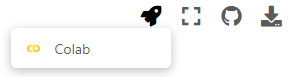

Google Colaboraty
Contents
Google Colaboraty#
¿Qué es Google Colaboraty?#
Google Colaboraty o también conocido como Google Colab o simplemente Colab es una herramienta gratuita desarrollado y alojado por Google para fomentar diferentes desarrollos de programación, este es muy similar a los famosos notebooks de jupyter
Google Colab nos permite trabajar con Notebooks y el lenguaje de programación Python y a su vez permite almacenar todos los Notebooks y trabajar con datos que se tengan almacenados en el Drive y compartirlos con el equipo de trabajo.
Con Google Colab tendríamos las herramientas necesarios para poder desarrollar el curso y explorar las diferentes clases cuantas veces queramos, sin necesidad de organizar un entorno de trabajo en nuestros computadores, solo es necesario una cuenta de Google Drive y tener una conexión a internet.
Primeros pasos#
El documento que estás leyendo es una web estática, pero si se abre desde un entorno interactivo como los notebooks de jupyter o google colab nos permite escribir y ejecutar código.
Por ejemplo, a continuación se muestra una celda de código con una breve secuencia de comandos de Python que calculan un valor, lo almacena en una variable y mostramos el resultado
segundos_en_un_dia = 24 * 60 * 60
segundos_en_un_dia
86400
Si se desea ejecutar el código de la celda anterior, haz clic para seleccionarlo y pulsa el botón de reproducir situado a la izquierda del código o usando la combinación de teclas “Ctrl + Enter”. Para editar el código, solo tienes que hacer clic en la celda.
Las variables que definas en una celda se pueden usar después en otras celdas:
segundos_en_una_semana = 7 * segundos_en_un_dia
segundos_en_una_semana
604800
Aunque veamos que en una celda sólo esté parte del código las variables que se llegan a almacenar en una celda cobran importancia en las celdas futuras si se llegan llamar dichas variables
Los cuadernos de Colab te permiten combinar código ejecutable y texto enriquecido en un mismo documento, además de imágenes, HTML, LaTeX y mucho más. Los cuadernos que creas en Colab se almacenan en tu cuenta de Google Drive. Puedes compartir tus cuadernos de Colab fácilmente con compañeros de trabajo o amigos, lo que les permite comentarlos o incluso editarlos. Consulta más información en Información general sobre Colab. Para crear un cuaderno de Colab, puedes usar el menú Archivo que aparece arriba o bien acceder al enlace para crear un cuaderno de Colab.
Los cuadernos de Colab son cuadernos de Jupyter alojados en Colab. Para obtener más información sobre el proyecto Jupyter, visita jupyter.org.
Para correr los diferentes notebooks del cursobasta con pasar el mouse en el ícono de la nave en la esquina superior derecha y dar click en el ícono de colab que se despliega
